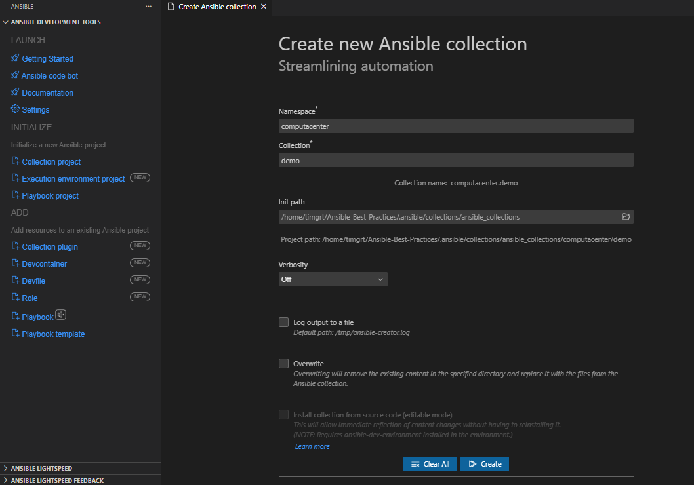

Collections
Collections are a distribution format for Ansible content. You do know collections from installing additional modules and plugins already, but you can also package and distribute your playbooks, roles, modules, and plugins in a custom collection.
Collection names consist of a namespace and a name, separated by a period (.). Both namespace and name should consist of ASCII letters (prefer lower-case letters), digits, and underscores (hyphens are not allowed). You should not use the following namespaces: ansible, community, local.
Collection or Role?
If you are writing modules/plugins and/or content which should (or can) be used outside of your current project, create a collection!
For example, your project automates the installation and configuration of a database, but you also created role(s) to harden the underlying Linux host. All hardeing roles should be moved into a collection.
In most cases, collections make more sense as they are the more flexible distribution format.
A collection can contain one or more roles in the roles/ directory and these are almost identical to standalone roles, except you need to move plugins out of the individual roles, and use the FQCN in some places.
Creating collections
A custom collection does not need much, only a README.md, a galaxy.yml and a meta/runtime.yml with the following content:
You can (and should!) provide additional information in the collection configuration files.
Take a look at the documentation for a complete example and all valid keys for the galaxy.yml or the top-level keys for the runtime.yml.
To scaffold the collection skeleton, either use the ansible-galaxy (simple and slightly outdated format) or the ansible-creator (full-fleged, but may be confusing for beginners) CLI utility.
Init with ansible-galaxy
To create a new collection use the following command with your desired namespace and (collection) name:
Expand to view the created collection skeleton
To create/initialize the collection alongside your existing project, append --init-path collections/ansible_collections to the command above.
The ansible-galaxy utility is also used to build, publish or (how you most likely know it for) install collections or collection artifacts.
Init with ansible-creator
Tip
The ansible-creator utility is not included in the default ansible-core package and must be installed separately!
The creator utility seamlessly integrates with Visual Studio Code (VS Code) and the Ansible extension for it, offering an intuitive GUI experience.
To create a new collection use the following command with your desired namespace and (collection) name:
Warning
The init path is different from the ansible-galaxy utility!
By default, no folder for namespace and collection name are created, but the collection content skeleton is created in the current folder!
Expand to view the created collection skeleton
$ tree
.
├── CHANGELOG.rst
├── CODE_OF_CONDUCT.md
├── CONTRIBUTING
├── LICENSE
├── MAINTAINERS
├── README.md
├── changelogs
│ └── config.yaml
├── devfile.yaml
├── docs
│ └── docsite
│ └── links.yml
├── extensions
│ ├── eda
│ │ └── rulebooks
│ │ └── rulebook.yml
│ └── molecule
│ ├── integration_hello_world
│ │ └── molecule.yml
│ └── utils
│ ├── playbooks
│ │ ├── converge.yml
│ │ └── noop.yml
│ └── vars
│ └── vars.yml
├── galaxy.yml
├── meta
│ └── runtime.yml
├── plugins
│ ├── action
│ │ ├── __init__.py
│ │ └── sample_action.py
│ ├── cache
│ │ └── __init__.py
│ ├── filter
│ │ ├── __init__.py
│ │ └── sample_filter.py
│ ├── inventory
│ │ └── __init__.py
│ ├── lookup
│ │ ├── __init__.py
│ │ └── sample_lookup.py
│ ├── module_utils
│ │ └── __init__.py
│ ├── modules
│ │ ├── __init__.py
│ │ ├── sample_action.py
│ │ └── sample_module.py
│ ├── plugin_utils
│ │ └── __init__.py
│ ├── sub_plugins
│ │ └── __init__.py
│ └── test
│ ├── __init__.py
│ └── sample_test.py
├── pyproject.toml
├── requirements.txt
├── roles
│ └── run
│ ├── README.md
│ ├── defaults
│ │ └── main.yml
│ ├── files
│ ├── handlers
│ │ └── main.yml
│ ├── meta
│ │ ├── argument_specs.yml
│ │ └── main.yml
│ ├── tasks
│ │ └── main.yml
│ ├── templates
│ ├── tests
│ │ └── inventory
│ └── vars
│ └── main.yml
├── test-requirements.txt
├── tests
│ ├── integration
│ │ ├── __init__.py
│ │ ├── targets
│ │ │ └── hello_world
│ │ │ └── tasks
│ │ │ └── main.yml
│ │ └── test_integration.py
│ └── unit
│ ├── __init__.py
│ └── test_basic.py
└── tox-ansible.ini
40 directories, 49 files
To initialize the collection with the VScode Ansible extension, select the extension, click Collection project, enter namespace and collection name, specify the destination directory and click Create.
